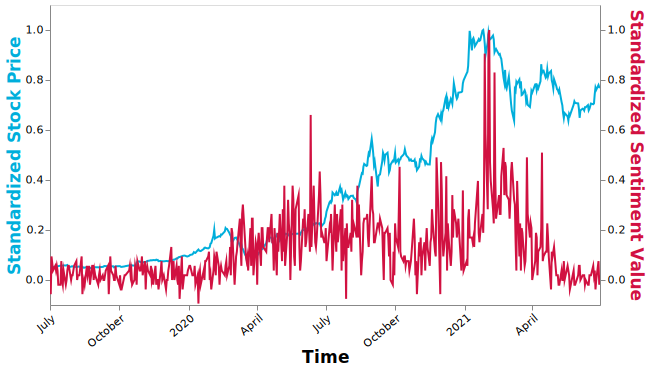

In this section, I plan to extract some meaningful keywords from comments, conduct sentiment analysis for the whole comments and specific stocks with natural language processing (NLP) method.
Specifically, text is cleaned using John Snow Labs NLP models first. Cleaning operation includes removing stop words, stemming, lemmatizing, and removing unusual characters.
Secondly, basic data text analysis is conducted like the most common words in these comments, the distribution of text lengths, the important words in terms of TF-IDF (Term Frequency Inverse Document Frequency).
Third, 2 dummy variables are created to identify whether the comment contains stocks, and whether the stocks mentioned belong to Top20 stocks mentioned.
After finishing these basic data processing and cleaning, graphs and tables for the sentiment results of top 20 stocks mentioned in Reddit’s comments, and the market trend with time are created.
Some Findings Quick Look:
Figure 1 Word Cloud of Stock Subreddit Comments (based on counts)
Figure 1 demonstrates popular key words in stock subreddit comments based on occurrence frequency of each word. “stock”, “go”, “buy” are mentioned most in these comments, which make sense in the stock context.
Also, “market” is mentioned more than 250000 times, which indicates users are passionate about talking about topics about market in this reddit and these comments could provide a lot of market information for us.
Interestingly, “Buy” is mentioned much more than “Sell” in comments from July 2019 to June 2021 which may indicate investors tend to feel optimistic about stock market from July 2019 to June 2021
Figure 4 Word Cloud of Stock Subreddit Comments (based on TF-IDF)
Figure 2 displays important words in these comments based on TF-IDF. TF-IDF (term frequency-inverse document frequency) quantifies the importance or relevance of string representations (words, phrases, lemmas, etc) in a document amongst a collection of documents, which could help to find important words in a certain comment by minimize the weighting of frequent terms in all comments like “of”, “as”, “the”.
In this case, “buy” ranks top 1, even more than “stock”, which provides strong evidence that most users feel optimistic about stock market.
Figure 3 Distribution of Comment Text Length in Stock Subreddit
Figure 3 indicates that most text length is from 0 to 50 words, and there is an obvious decreasing trend for counts with text length increasing.
However, there is another sight increase for comments whose text length is between 140 and 150 words. The reason for this phenomenon is still needed to explore.
Figure 4 Screenshot of Dataset with Dummy Variables
Figure 4 shows 2 dummy varibales added into the dataset based whether the comment mentions stocks, and whether the stock mentioned belongs to the Top 20 stocks mentioned most
Figure 5 Sentiment Change of Comments in Stock Subreddit
The red line means the average sentiment values in this period. Generally, users tend to feel optimistic about the market in most of time based on figure 5.
In more detailed level, People are more likely to feel positive about the market from March 2020 to March 2021, compared with period before March 2020
Figure 6 Sentiment Analysis for Top 20 stocks mentioned in Stock Subreddit
From figure 6, a fact is that discussions about GameStop (GME) mix with positive and negative comments, while TESLA (TSLA), and DuPoint (DD) gain more positive comments
Additionally, DuPoint, a healthecare company may be a good choice for buying. Most people feel good about it. However, AMC is not because of the opposite sentiments.
Figure 7 Sentiment Change for Top 20 stocks mentioned in Stock Subreddit
Figure 7 is complementary to figure 6, showing the change of sentiment with time for these stocks
From the plot, February 2021 seems a shape turning point with the fact that the sentiment distinction for these 20 stocks becomes significant. It may be caused by the lack of data after this moment, but it sill needs to be explored.

Figure 8 Sentiment and Stock Price Change for Tesla
Finally, I dive into the analysis for Tesla, one of reasons is it is mentioned most in this forum, another one is Tesla is a highly famous company recently.
In order to find the relationship between sentiment of comments about Tesla and its stock price, their changes are put in one plot. Because of different scale of stock price and sentiment values, standardization is conducted for both stock price and sentiment values. From figure 8, we could find sentiment change of comments for Tesla is similar to its stock price, especially for the period between July 2019 and August 2020. Also, both sentiment values and stock price increase shapely during 2021 February.
In the other hand, sentiment value of comments change more violently than stock price.
Copyright © ZhibaoLi, Graduate of Data Science and Analytics, Georgetown University. All rights reserved.